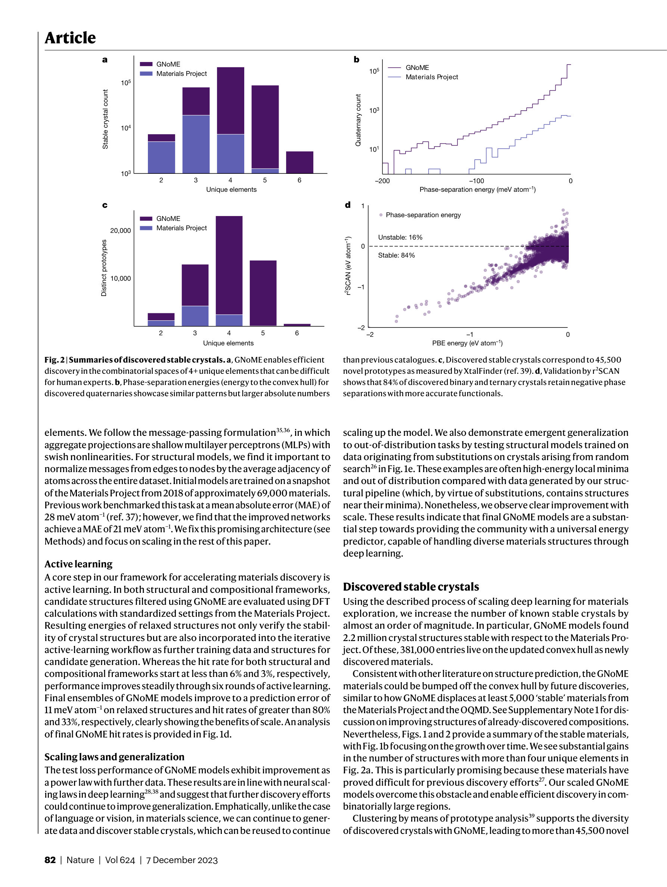
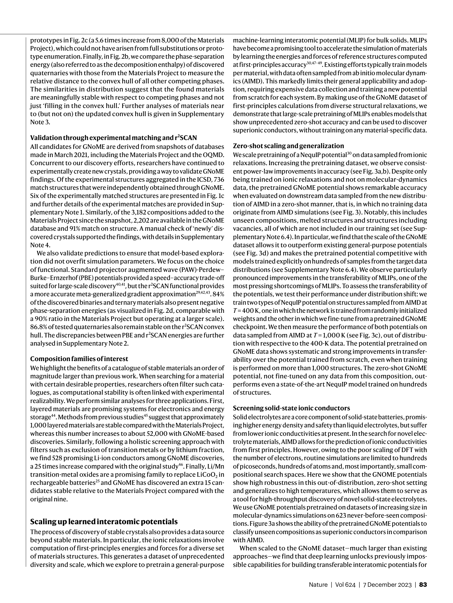

Figure 1
저자: Amil Merchant, Simon Batzner, Samuel S. Schoenholz, Muratahan Aykol, Gowoon Cheon, Ekin Dogus Cubuk | 날짜: 2023 | Journal: Nature | DOI: 10.1038/s41586-023-06735-9
Figure 1
Graph neural network (GNoME)을 대규모 active learning과 결합하여 기존 48,000개에서 381,000개의 새로운 안정 결정 구조를 발견, 인류가 알고 있는 안정 물질을 약 10배 확장했다. 총 2.2M 구조가 기존 convex hull 아래에 위치하며, hit rate를 기존 1%에서 구조 기반 80%, 조성 기반 33%로 향상시켰다.

Figure 2

Figure 3
총평: Active learning 기반 data flywheel과 GNN의 scaling을 결합하여 안정 무기 결정 재료를 10배 확장한 기념비적 연구로, AI for Materials Science 분야의 AlphaFold 격 성과이다. 다만 PBE functional 의존성과 synthesizability 미고려가 실용화까지의 남은 과제이다.